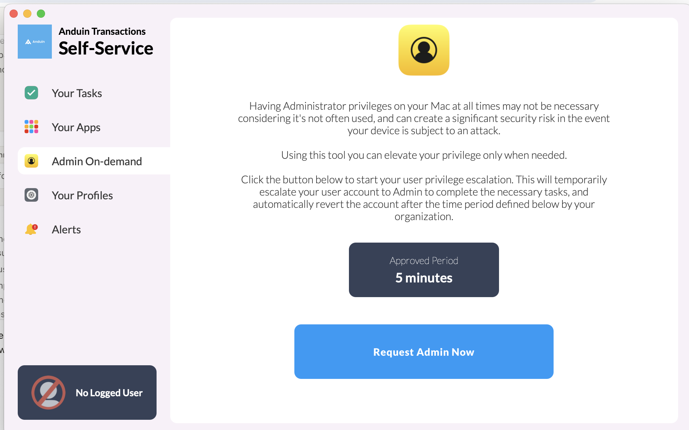
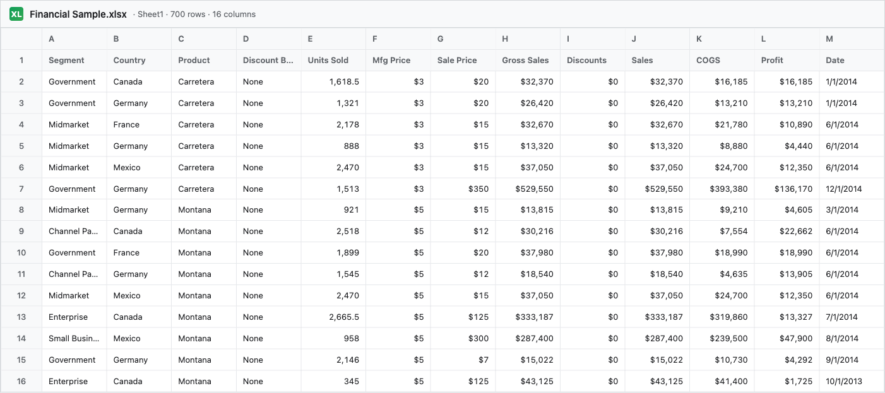
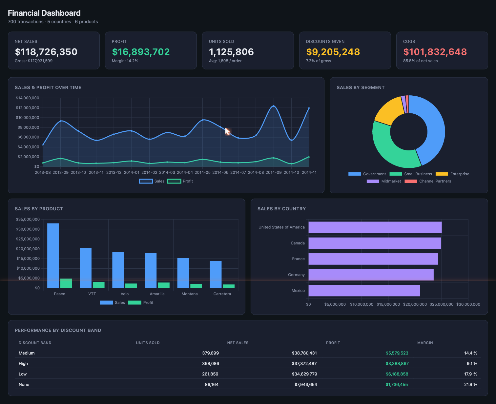

build me a tetris game
to run in the web browser
 Fast Track
Fast Track
Day 1 · Vibe Coding Workshop
Vibe Coding.
Build real software by describing what you want.
No syntax. No semicolons. Just sentences.
Fast Track- Founded CoderSchool — taught people to code the hard way for a decade.
- Genuinely think coding is like magic. Love turning muggles into wizards.
- I talk too fast when I get excited. Raise a hand and tell me to slow down.
Fast TrackGrab admin access first.
Anduin laptops run locked down. To install software — or do anything that needs sudo — you temporarily elevate your user via Self-Service on your Mac.
Open Self-Service (it's already installed — Spotlight: Self-Service).
Click Admin On-demand in the sidebar.
Hit Request Admin Now — you get 5 minutes of admin.
Wait for the “converted to admin” notification, then move to the next slide.
Heads up: every time something asks for sudo or your admin password today — do this again. 5-minute windows expire on their own.

Anduin Transactions Self-Service → Admin On-demand
Fast TrackInstall Claude Code.
# paste this, press enter, walk away for ~2 minutes
$ curl -fsSL https://claude.ai/install.sh | bash
A big black window will open. That's normal. Don't try to read it. We'll explain it in 20 minutes.
Takes about 2 minutes. I'll keep talking while it runs. Move to the next slide with me.
Reminder
You need admin for this. If you skipped slide 3 — pop open Self-Service → Admin On-demand → Request Admin Now, then come back and paste.
Fast TrackTell us three things.
1
Your name.
2
What you do.
3
The last thing you asked Claude or ChatGPT.Mine was “how to make soy milk” — new machine from Emart.
~5 minutes · roughly your install window
Fast Track$ claude --version
↳ 2.1.144 (Claude Code)
$ claude
↳ Welcome to Claude Code
# if you see this, you're done.
🖐️
Errors?
Raise a hand.
We're not moving on until every person in this room is ready. Take a sip of water — we'll get you there.
Fast TrackComputers do exactly
what you mean
say.
Wife
"Go to the store. Buy a dozen eggs. And if they have apples, get six."
Husband
comes home with six cartons of eggs.
Wife
"Why six?"
Husband
"They had apples."
A real example · 1999
NASA lost a $327M Mars orbiter because two teams used different units.
Lockheed wrote thrust in pound-force seconds. NASA expected newton-seconds. The math was correct. The intent was clear. The computer did exactly what it was told — and flew the satellite into Mars.
$327M burned0 lines of buggy code
Fast TrackFor 50 years, building Tetris looked like the left.
Now it looks like the right.
Before · 600+ lines
// tetris.js — 600+ lines const COLS=10,ROWS=20; const SHAPES = { I:[[1,1,1,1]], O:[[1,1],[1,1]], T:[[0,1,0],[1,1,1]], }; function rotate(m) { const n=m.length; const r=Array.from( {length:n}, ()=>[]); for(let y=0;y<n;y++) for(let x=0;x<n;x++) r[x][n-1-y]=m[y][x];
Now · 1 sentence
› claude
That's the whole file.
 Fast Track
Fast TrackFour groups. Four games.
Built from scratch, in your browser, in minutes.
1Group One
build a tetris game to run in the web browser
2Group Two
build a flappy bird game to run in the web browser
3Group Three
build a breakout game to run in the web browser
4Group Four
build a chess game with a simple cpu opponent in the web browser
Fast TrackThe terminal is Finder —
but typed.
Same folders, same files. You type instead of click. Faster, and you look cooler.
pwd
Where am I?
/Users/charles/Documents
cd
Go somewhere.
cd Documents
mkdir
Make a folder.
mkdir ai-class
~ ..
Home, and up one.
cd ~ · cd ..
One rule: no spaces in folder names. Ever. Use
ai-class, not ai class.
Fast TrackYour runbook.
- cd ~/Documents
- mkdir ai-class
- cd ai-class
- mkdir week1
- cd week1
- claude
↳ Then paste your group's prompt and hit enter.
What this does, in plain English.
1–2
Go to Documents, make a folder for the whole class. We'll reuse it every week.
3–5
Step inside it, make a folder for today's session, step inside that one.
6
Launch Claude. The window changes. Now it's listening.
›
Paste your prompt. Watch. Ask follow-up questions in plain English.
Fast TrackThe payoff
Show & tell.
Each group, get up and show us what you built.
Broken counts. Broken is the most interesting kind.
Group 1 · Tetris
Group 2 · Flappy
Group 3 · Breakout
Group 4 · Chess
Fast TrackYou just built
real software.
Not a tutorial. Not a toy. Real, working software that ran in your browser — in the time it took to drink a coffee.
Fast TrackPart 2
From games to
real work.
Same skill. Same move. Different prompt.
Let's build a tool that actually saves you hours.
Fast TrackBuild a business tool.
› claude
Build a web app that lets me upload an Excel spreadsheet of business data and turns it into clear, interactive charts.
cd ~/Documents/ai-class·
mkdir week1-business·
claude
XL
Download the sample spreadsheet
docs.google.com · Financial Sample.xlsx
↗
Input · sample data

↓
Output · what you'll build

Fast TrackA peek at what's next.
Today was the on-ramp. Here's where we'll go from here — bigger ideas, real apps, slowly.
01
Architecture
Frontend & Backend
The two halves of every app — what users see, and what runs behind the scenes.
02
UI Library
React
The most popular way to build modern interfaces. Lego blocks, but for screens.
03
Data
Supabase + SQL
A real database in the cloud, plus the language you use to ask it questions.
04
Auth
Google Login
"Sign in with Google" — adding real authentication without writing a password system.
05
Collaboration
GitHub
Where your code lives, gets backed up, and is shared with teammates (or the world).
06
Quality
Testing
How you tell Claude to verify its own work — and how to actually trust the answer.
One concept per week. Each one unlocks a whole new category of things you can build.
Fast TrackToday wasn't about games.
It was about the fact that
you can build software now.
Your reports. Your trackers. Your busywork. Your weird side ideas.
The cost of building has gone to roughly zero. The only question left is what.
Thanks.
Go make something.
Charles · Anduin Slack